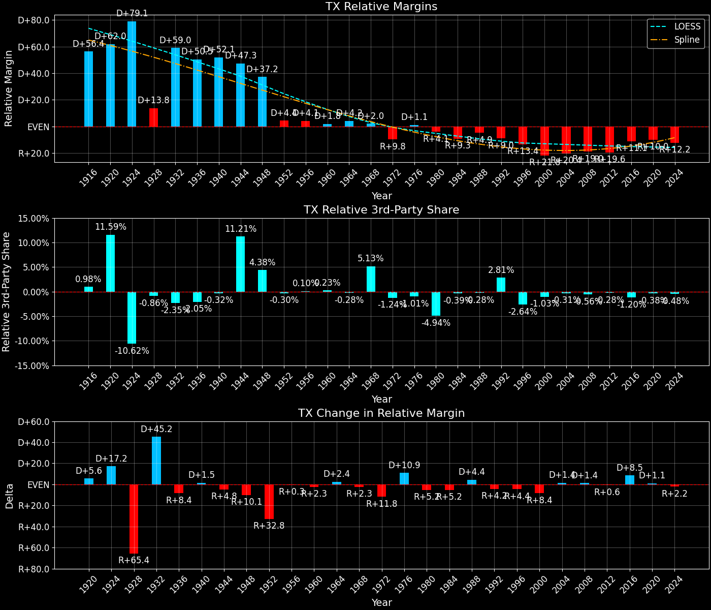
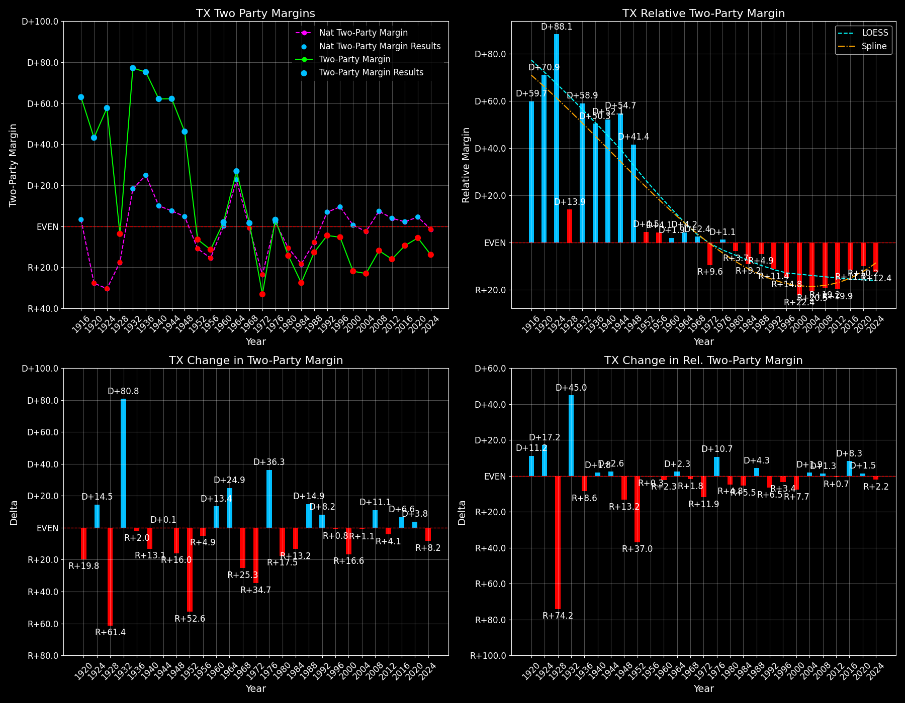

Texas (TX) — Statewide

Margins · 3rd-Party share · Pres. deltas

Relative margins · Relative 3rd-Party · Rel. deltas
Texas (TX) — Total Data
| Year | D | R | State Margin | Nat. Margin | Rel. Margin | Total votes | EVs |
|---|---|---|---|---|---|---|---|
| 1916 | 286,514(76.9%) | 64,999(17.5%) | D+59.5 | D+3.1 | D+56.4 | 372,467 | 20 |
| 1920 | 288,767(59.3%)(Δ 2,253) | 114,538(23.5%)(Δ 49,539) | D+35.8(Δ R+23.7) | R+26.2(Δ R+29.3) | D+62.0(Δ D+5.6) | 486,641(Δ 114,174) | 20 |
| 1924 | 484,605(73.7%)(Δ 195,838) | 130,023(19.8%)(Δ 15,485) | D+53.9(Δ D+18.1) | R+25.2(Δ D+1.0) | D+79.1(Δ D+17.2) | 657,509(Δ 170,868) | 20 |
| 1928 | 341,032(48.1%)(Δ -143,573) | 367,036(51.8%)(Δ 237,013) | R+3.7(Δ R+57.6) | R+17.4(Δ D+7.8) | D+13.8(Δ R+65.4) | 708,999(Δ 51,490) | 20 |
| 1932 | 760,348(88.1%)(Δ 419,316) | 97,959(11.3%)(Δ -269,077) | D+76.7(Δ D+80.4) | D+17.8(Δ D+35.2) | D+59.0(Δ D+45.2) | 863,426(Δ 154,427) | 23 |
| 1936 | 734,485(87.1%)(Δ -25,863) | 103,874(12.3%)(Δ 5,915) | D+74.8(Δ R+2.0) | D+24.3(Δ D+6.5) | D+50.5(Δ R+8.4) | 843,482(Δ -19,944) | 23 |
| 1940 | 909,974(80.9%)(Δ 175,489) | 212,692(18.9%)(Δ 108,818) | D+62.0(Δ R+12.8) | D+10.0(Δ R+14.3) | D+52.1(Δ D+1.5) | 1,124,531(Δ 281,049) | 23 |
| 1944 | 821,605(71.4%)(Δ -88,369) | 191,425(16.6%)(Δ -21,267) | D+54.8(Δ R+7.2) | D+7.5(Δ R+2.5) | D+47.3(Δ R+4.8) | 1,150,331(Δ 25,800) | 23 |
| 1948 | 824,235(66.0%)(Δ 2,630) | 303,467(24.3%)(Δ 112,042) | D+41.7(Δ R+13.1) | D+4.5(Δ R+3.0) | D+37.2(Δ R+10.1) | 1,249,577(Δ 99,246) | 23 |
| 1952 | 969,228(46.7%)(Δ 144,993) | 1,102,878(53.1%)(Δ 799,411) | R+6.4(Δ R+48.1) | R+10.9(Δ R+15.3) | D+4.4(Δ R+32.8) | 2,075,946(Δ 826,369) | 24 |
| 1956 | 859,958(44.0%)(Δ -109,270) | 1,080,619(55.3%)(Δ -22,259) | R+11.3(Δ R+4.8) | R+15.4(Δ R+4.5) | D+4.1(Δ R+0.3) | 1,955,545(Δ -120,401) | 24 |
| 1960 | 1,167,567(50.5%)(Δ 307,609) | 1,121,310(48.5%)(Δ 40,691) | D+2.0(Δ D+13.3) | D+0.2(Δ D+15.6) | D+1.8(Δ R+2.3) | 2,311,084(Δ 355,539) | 24 |
| 1964 | 1,663,185(63.3%)(Δ 495,618) | 958,566(36.5%)(Δ -162,744) | D+26.8(Δ D+24.8) | D+22.6(Δ D+22.4) | D+4.2(Δ D+2.4) | 2,626,811(Δ 315,727) | 25 |
| 1968 | 1,266,804(41.1%)(Δ -396,381) | 1,227,844(39.9%)(Δ 269,278) | D+1.3(Δ R+25.6) | R+0.7(Δ R+23.3) | D+2.0(Δ R+2.3) | 3,079,406(Δ 452,595) | 25 |
| 1972 | 1,154,291(33.2%)(Δ -112,513) | 2,298,896(66.2%)(Δ 1,071,052) | R+33.0(Δ R+34.2) | R+23.1(Δ R+22.4) | R+9.8(Δ R+11.8) | 3,472,714(Δ 393,308) | 26 |
| 1976 | 2,082,319(51.1%)(Δ 928,028) | 1,953,300(48.0%)(Δ -345,596) | D+3.2(Δ D+36.1) | D+2.1(Δ D+25.2) | D+1.1(Δ D+10.9) | 4,071,884(Δ 599,170) | 26 |
| 1980 | 1,881,147(41.4%)(Δ -201,172) | 2,510,705(55.3%)(Δ 557,405) | R+13.9(Δ R+17.0) | R+9.7(Δ R+11.8) | R+4.1(Δ R+5.2) | 4,541,637(Δ 469,753) | 26 |
| 1984 | 1,949,276(36.1%)(Δ 68,129) | 3,433,428(63.6%)(Δ 922,723) | R+27.5(Δ R+13.6) | R+18.2(Δ R+8.5) | R+9.3(Δ R+5.2) | 5,397,571(Δ 855,934) | 29 |
| 1988 | 2,352,748(43.3%)(Δ 403,472) | 3,036,829(56.0%)(Δ -396,599) | R+12.6(Δ D+14.9) | R+7.7(Δ D+10.5) | R+4.9(Δ D+4.4) | 5,427,410(Δ 29,839) | 29 |
| 1992 | 2,281,815(37.1%)(Δ -70,933) | 2,496,071(40.6%)(Δ -540,758) | R+3.5(Δ D+9.1) | D+5.6(Δ D+13.3) | R+9.0(Δ R+4.2) | 6,154,018(Δ 726,608) | 32 |
| 1996 | 2,459,683(43.8%)(Δ 177,868) | 2,736,167(48.8%)(Δ 240,096) | R+4.9(Δ R+1.4) | D+8.5(Δ D+3.0) | R+13.4(Δ R+4.4) | 5,611,644(Δ -542,374) | 32 |
| 2000 | 2,433,746(38.0%)(Δ -25,937) | 3,799,639(59.3%)(Δ 1,063,472) | R+21.3(Δ R+16.4) | D+0.5(Δ R+8.0) | R+21.8(Δ R+8.4) | 6,407,637(Δ 795,993) | 32 |
| 2004 | 2,832,704(38.2%)(Δ 398,958) | 4,526,917(61.1%)(Δ 727,278) | R+22.9(Δ R+1.5) | R+2.5(Δ R+3.0) | R+20.4(Δ D+1.4) | 7,410,765(Δ 1,003,128) | 34 |
| 2008 | 3,528,633(43.7%)(Δ 695,929) | 4,479,328(55.5%)(Δ -47,589) | R+11.8(Δ D+11.1) | D+7.3(Δ D+9.7) | R+19.0(Δ D+1.4) | 8,077,795(Δ 667,030) | 34 |
| 2012 | 3,308,124(41.4%)(Δ -220,509) | 4,569,843(57.2%)(Δ 90,515) | R+15.8(Δ R+4.0) | D+3.9(Δ R+3.4) | R+19.6(Δ R+0.6) | 7,993,851(Δ -83,944) | 38 |
| 2016 | 3,877,868(43.2%)(Δ 569,744) | 4,685,047(52.2%)(Δ 115,204) | R+9.0(Δ D+6.8) | D+2.1(Δ R+1.8) | R+11.1(Δ D+8.5) | 8,969,226(Δ 975,375) | 38 |
| 2020 | 5,259,126(46.5%)(Δ 1,381,258) | 5,890,347(52.1%)(Δ 1,205,300) | R+5.6(Δ D+3.4) | D+4.5(Δ D+2.4) | R+10.0(Δ D+1.1) | 11,315,056(Δ 2,345,830) | 38 |
| 2024 | 4,835,250(42.5%)(Δ -423,876) | 6,393,597(56.1%)(Δ 503,250) | R+13.7(Δ R+8.1) | R+1.5(Δ R+5.9) | R+12.2(Δ R+2.2) | 11,388,674(Δ 73,618) | 40 |
Column explanations
- Δ
- Change (delta) in the value from the previous election year.
- Year
- Election year.
- D
- Number of votes for the Democratic candidate (raw count(pct%)).
- R
- Number of votes for the Republican candidate (raw count(pct%)).
- State Margin
- Margin between the two major-party candidates, including third-party votes ((D - R)/total).
- Nat. Margin
- The national presidential margin for that year, including third-party votes ((D_total - R_total)/total_votes).
- Rel. Margin
- The presidential margin relative to the national presidential margin (Margin - Nat. Margin).
- Total votes
- Total voter turnout or ballots cast (when provided).
- EVs
- Number of electoral votes allocated to this state or unit.
Texas (TX) — Third-Party Data
| Year | D | R | Other votes | State 3rd-Party Share | 3rd-Party Nat. Share | 3rd-Party Rel. Share |
|---|---|---|---|---|---|---|
| 1916 | 286,514(76.9%) | 64,999(17.5%) | 20,954(5.6%) | 5.63% | 4.64% | 0.98% |
| 1920 | 288,767(59.3%)(Δ 2,253) | 114,538(23.5%)(Δ 49,539) | 83,336(17.1%) | 17.12% | 5.53% | 11.59% |
| 1924 | 484,605(73.7%)(Δ 195,838) | 130,023(19.8%)(Δ 15,485) | 42,881(6.5%) | 6.52% | 17.14% | -10.62% |
| 1928 | 341,032(48.1%)(Δ -143,573) | 367,036(51.8%)(Δ 237,013) | 931(0.1%) | 0.13% | 0.99% | -0.86% |
| 1932 | 760,348(88.1%)(Δ 419,316) | 97,959(11.3%)(Δ -269,077) | 5,119(0.6%) | 0.59% | 2.94% | -2.35% |
| 1936 | 734,485(87.1%)(Δ -25,863) | 103,874(12.3%)(Δ 5,915) | 5,123(0.6%) | 0.61% | 2.66% | -2.05% |
| 1940 | 909,974(80.9%)(Δ 175,489) | 212,692(18.9%)(Δ 108,818) | 1,865(0.2%) | 0.17% | 0.48% | -0.32% |
| 1944 | 821,605(71.4%)(Δ -88,369) | 191,425(16.6%)(Δ -21,267) | 137,301(11.9%) | 11.94% | 0.72% | 11.21% |
| 1948 | 824,235(66.0%)(Δ 2,630) | 303,467(24.3%)(Δ 112,042) | 121,875(9.8%) | 9.75% | 5.38% | 4.38% |
| 1952 | 969,228(46.7%)(Δ 144,993) | 1,102,878(53.1%)(Δ 799,411) | 3,840(0.2%) | 0.18% | 0.49% | -0.30% |
| 1956 | 859,958(44.0%)(Δ -109,270) | 1,080,619(55.3%)(Δ -22,259) | 14,968(0.8%) | 0.77% | 0.67% | 0.10% |
| 1960 | 1,167,567(50.5%)(Δ 307,609) | 1,121,310(48.5%)(Δ 40,691) | 22,207(1.0%) | 0.96% | 0.73% | 0.23% |
| 1964 | 1,663,185(63.3%)(Δ 495,618) | 958,566(36.5%)(Δ -162,744) | 5,060(0.2%) | 0.19% | 0.48% | -0.28% |
| 1968 | 1,266,804(41.1%)(Δ -396,381) | 1,227,844(39.9%)(Δ 269,278) | 584,758(19.0%) | 18.99% | 13.86% | 5.13% |
| 1972 | 1,154,291(33.2%)(Δ -112,513) | 2,298,896(66.2%)(Δ 1,071,052) | 19,527(0.6%) | 0.56% | 1.80% | -1.24% |
| 1976 | 2,082,319(51.1%)(Δ 928,028) | 1,953,300(48.0%)(Δ -345,596) | 36,265(0.9%) | 0.89% | 1.90% | -1.01% |
| 1980 | 1,881,147(41.4%)(Δ -201,172) | 2,510,705(55.3%)(Δ 557,405) | 149,785(3.3%) | 3.30% | 8.24% | -4.94% |
| 1984 | 1,949,276(36.1%)(Δ 68,129) | 3,433,428(63.6%)(Δ 922,723) | 14,867(0.3%) | 0.28% | 0.67% | -0.39% |
| 1988 | 2,352,748(43.3%)(Δ 403,472) | 3,036,829(56.0%)(Δ -396,599) | 37,833(0.7%) | 0.70% | 0.98% | -0.28% |
| 1992 | 2,281,815(37.1%)(Δ -70,933) | 2,496,071(40.6%)(Δ -540,758) | 1,376,132(22.4%) | 22.36% | 19.55% | 2.81% |
| 1996 | 2,459,683(43.8%)(Δ 177,868) | 2,736,167(48.8%)(Δ 240,096) | 415,794(7.4%) | 7.41% | 10.05% | -2.64% |
| 2000 | 2,433,746(38.0%)(Δ -25,937) | 3,799,639(59.3%)(Δ 1,063,472) | 174,252(2.7%) | 2.72% | 3.75% | -1.03% |
| 2004 | 2,832,704(38.2%)(Δ 398,958) | 4,526,917(61.1%)(Δ 727,278) | 51,144(0.7%) | 0.69% | 1.00% | -0.31% |
| 2008 | 3,528,633(43.7%)(Δ 695,929) | 4,479,328(55.5%)(Δ -47,589) | 69,834(0.9%) | 0.86% | 1.42% | -0.56% |
| 2012 | 3,308,124(41.4%)(Δ -220,509) | 4,569,843(57.2%)(Δ 90,515) | 115,884(1.4%) | 1.45% | 1.73% | -0.28% |
| 2016 | 3,877,868(43.2%)(Δ 569,744) | 4,685,047(52.2%)(Δ 115,204) | 406,311(4.5%) | 4.53% | 5.73% | -1.20% |
| 2020 | 5,259,126(46.5%)(Δ 1,381,258) | 5,890,347(52.1%)(Δ 1,205,300) | 165,583(1.5%) | 1.46% | 1.84% | -0.38% |
| 2024 | 4,835,250(42.5%)(Δ -423,876) | 6,393,597(56.1%)(Δ 503,250) | 159,827(1.4%) | 1.40% | 1.88% | -0.48% |
Column explanations
- Year
- Election year.
- D
- Number of votes for the Democratic candidate (raw count(pct%)).
- R
- Number of votes for the Republican candidate (raw count(pct%)).
- Other votes
- Number of votes for third-party (other) candidates (raw count(pct%)).
- State 3rd-Party Share
- Share of the vote received by third-party (other) candidates.
- 3rd-Party Nat. Share
- The national third-party share for that year (3rd-Party votes / total votes).
- 3rd-Party Rel. Share
- Third-party share relative to the national third-party share (3rd-Party share - Nat. 3rd-Party share).

Two-party margins · relative · deltas
Texas (TX) — Two-Party Data
| Year | D | R | 2-Party Margin | 2-Party Nat. Margin | 2-Party Rel. Margin | EVs |
|---|---|---|---|---|---|---|
| 1916 | 286,514(81.5%) | 64,999(18.5%) | D+63.0 | D+3.3 | D+59.7 | 20 |
| 1920 | 288,767(71.6%)(Δ 2,253) | 114,538(28.4%)(Δ 49,539) | D+43.2(Δ R+19.8) | R+27.7(Δ R+31.0) | D+70.9(Δ D+11.2) | 20 |
| 1924 | 484,605(78.8%)(Δ 195,838) | 130,023(21.2%)(Δ 15,485) | D+57.7(Δ D+14.5) | R+30.4(Δ R+2.7) | D+88.1(Δ D+17.2) | 20 |
| 1928 | 341,032(48.2%)(Δ -143,573) | 367,036(51.8%)(Δ 237,013) | R+3.7(Δ R+61.4) | R+17.6(Δ D+12.8) | D+13.9(Δ R+74.2) | 20 |
| 1932 | 760,348(88.6%)(Δ 419,316) | 97,959(11.4%)(Δ -269,077) | D+77.2(Δ D+80.8) | D+18.3(Δ D+35.9) | D+58.9(Δ D+45.0) | 23 |
| 1936 | 734,485(87.6%)(Δ -25,863) | 103,874(12.4%)(Δ 5,915) | D+75.2(Δ R+2.0) | D+24.9(Δ D+6.6) | D+50.3(Δ R+8.6) | 23 |
| 1940 | 909,974(81.1%)(Δ 175,489) | 212,692(18.9%)(Δ 108,818) | D+62.1(Δ R+13.1) | D+10.0(Δ R+14.9) | D+52.1(Δ D+1.8) | 23 |
| 1944 | 821,605(81.1%)(Δ -88,369) | 191,425(18.9%)(Δ -21,267) | D+62.2(Δ D+0.1) | D+7.5(Δ R+2.5) | D+54.7(Δ D+2.6) | 23 |
| 1948 | 824,235(73.1%)(Δ 2,630) | 303,467(26.9%)(Δ 112,042) | D+46.2(Δ R+16.0) | D+4.7(Δ R+2.8) | D+41.4(Δ R+13.2) | 23 |
| 1952 | 969,228(46.8%)(Δ 144,993) | 1,102,878(53.2%)(Δ 799,411) | R+6.4(Δ R+52.6) | R+10.9(Δ R+15.6) | D+4.5(Δ R+37.0) | 24 |
| 1956 | 859,958(44.3%)(Δ -109,270) | 1,080,619(55.7%)(Δ -22,259) | R+11.4(Δ R+4.9) | R+15.5(Δ R+4.6) | D+4.1(Δ R+0.3) | 24 |
| 1960 | 1,167,567(51.0%)(Δ 307,609) | 1,121,310(49.0%)(Δ 40,691) | D+2.0(Δ D+13.4) | D+0.2(Δ D+15.7) | D+1.9(Δ R+2.3) | 24 |
| 1964 | 1,663,185(63.4%)(Δ 495,618) | 958,566(36.6%)(Δ -162,744) | D+26.9(Δ D+24.9) | D+22.7(Δ D+22.5) | D+4.2(Δ D+2.3) | 25 |
| 1968 | 1,266,804(50.8%)(Δ -396,381) | 1,227,844(49.2%)(Δ 269,278) | D+1.6(Δ R+25.3) | R+0.8(Δ R+23.5) | D+2.4(Δ R+1.8) | 25 |
| 1972 | 1,154,291(33.4%)(Δ -112,513) | 2,298,896(66.6%)(Δ 1,071,052) | R+33.1(Δ R+34.7) | R+23.6(Δ R+22.8) | R+9.6(Δ R+11.9) | 26 |
| 1976 | 2,082,319(51.6%)(Δ 928,028) | 1,953,300(48.4%)(Δ -345,596) | D+3.2(Δ D+36.3) | D+2.1(Δ D+25.7) | D+1.1(Δ D+10.7) | 26 |
| 1980 | 1,881,147(42.8%)(Δ -201,172) | 2,510,705(57.2%)(Δ 557,405) | R+14.3(Δ R+17.5) | R+10.6(Δ R+12.7) | R+3.7(Δ R+4.8) | 26 |
| 1984 | 1,949,276(36.2%)(Δ 68,129) | 3,433,428(63.8%)(Δ 922,723) | R+27.6(Δ R+13.2) | R+18.3(Δ R+7.7) | R+9.2(Δ R+5.5) | 29 |
| 1988 | 2,352,748(43.7%)(Δ 403,472) | 3,036,829(56.3%)(Δ -396,599) | R+12.7(Δ D+14.9) | R+7.8(Δ D+10.5) | R+4.9(Δ D+4.3) | 29 |
| 1992 | 2,281,815(47.8%)(Δ -70,933) | 2,496,071(52.2%)(Δ -540,758) | R+4.5(Δ D+8.2) | D+6.9(Δ D+14.7) | R+11.4(Δ R+6.5) | 32 |
| 1996 | 2,459,683(47.3%)(Δ 177,868) | 2,736,167(52.7%)(Δ 240,096) | R+5.3(Δ R+0.8) | D+9.5(Δ D+2.6) | R+14.8(Δ R+3.4) | 32 |
| 2000 | 2,433,746(39.0%)(Δ -25,937) | 3,799,639(61.0%)(Δ 1,063,472) | R+21.9(Δ R+16.6) | D+0.5(Δ R+8.9) | R+22.4(Δ R+7.7) | 32 |
| 2004 | 2,832,704(38.5%)(Δ 398,958) | 4,526,917(61.5%)(Δ 727,278) | R+23.0(Δ R+1.1) | R+2.5(Δ R+3.0) | R+20.5(Δ D+1.9) | 34 |
| 2008 | 3,528,633(44.1%)(Δ 695,929) | 4,479,328(55.9%)(Δ -47,589) | R+11.9(Δ D+11.1) | D+7.4(Δ D+9.9) | R+19.2(Δ D+1.3) | 34 |
| 2012 | 3,308,124(42.0%)(Δ -220,509) | 4,569,843(58.0%)(Δ 90,515) | R+16.0(Δ R+4.1) | D+3.9(Δ R+3.4) | R+19.9(Δ R+0.7) | 38 |
| 2016 | 3,877,868(45.3%)(Δ 569,744) | 4,685,047(54.7%)(Δ 115,204) | R+9.4(Δ D+6.6) | D+2.2(Δ R+1.7) | R+11.7(Δ D+8.3) | 38 |
| 2020 | 5,259,126(47.2%)(Δ 1,381,258) | 5,890,347(52.8%)(Δ 1,205,300) | R+5.7(Δ D+3.8) | D+4.5(Δ D+2.3) | R+10.2(Δ D+1.5) | 38 |
| 2024 | 4,835,250(43.1%)(Δ -423,876) | 6,393,597(56.9%)(Δ 503,250) | R+13.9(Δ R+8.2) | R+1.5(Δ R+6.0) | R+12.4(Δ R+2.2) | 40 |
Column explanations
- Δ
- Change (delta) in the value from the previous election year.
- Year
- Election year.
- D
- Number of votes for the Democratic candidate (raw count(pct%)).
- R
- Number of votes for the Republican candidate (raw count(pct%)).
- 2-Party Margin
- Margin between the two major-party candidates, ignoring third-party votes ((D - R)/(D + R)).
- 2-Party Nat. Margin
- The national presidential margin for that year, including third-party votes ((D_total - R_total)/total_votes).
- 2-Party Rel. Margin
- The presidential margin relative to the national presidential margin (Margin - Nat. Margin).
- EVs
- Number of electoral votes allocated to this state or unit.